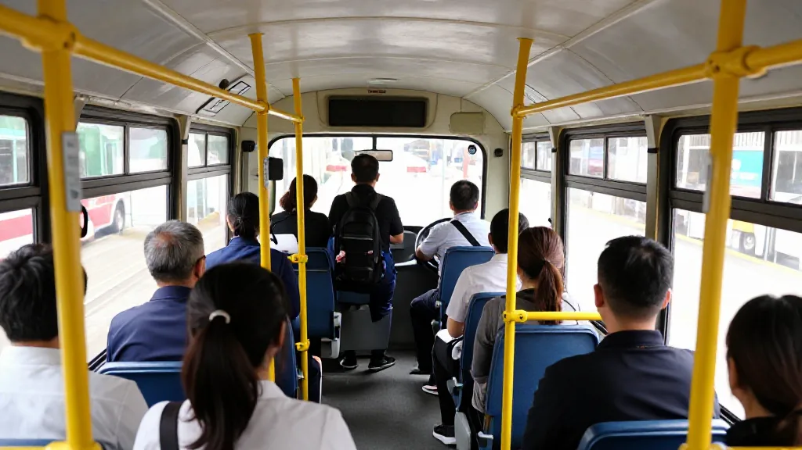
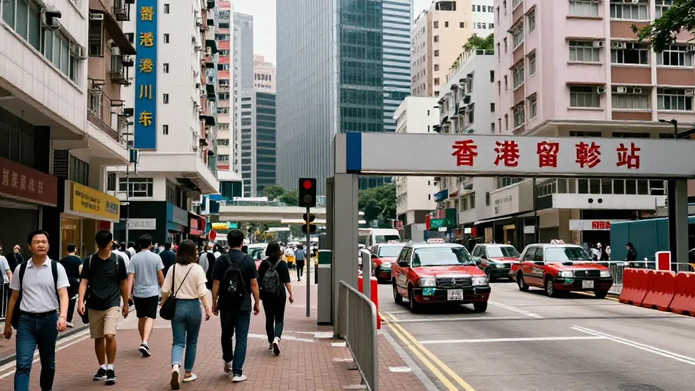
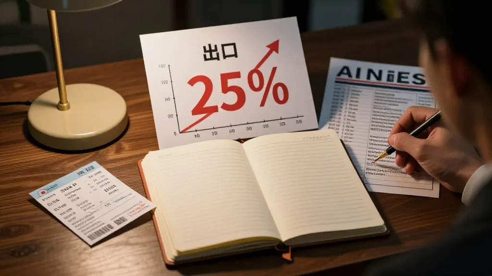

2026年9月15日，星期二。呢日有两件事，看似毫无关系，但喺我脑里却撞出火花。
第一件事：我经过九龙太子道，见到一架城巴6333停喺巴士站。第二件事：中国出入境新规今日正式生效。
一件系香港嘅日常，一件系国家政策。表面上完全冇关系，但仔细谂——两件事都讲紧同一件事：「人嘅流动」。
一、城巴6333嘅工作：每日接驳点同点
城巴6333嘅工作，就系喺太子道接驳乘客。由A点接人，送到B点放人，然后返转头接下一批。每程30分钟，每日来回20程，每程平均50人，一日就系1000人嘅流动。
呢种流动看似简单，实际系香港命脉：打工仔靠佢返工，学生靠佢上课，医生靠佢去医院，商人靠佢去见客。如果冇咗城巴，香港就停摆。城巴嘅本质就系降低人嘅流动成本。

圖片由 AI輔助創作（Z-Image-Turbo）
二、出入境新规嘅工作：今日起限制人嘅流动
9月15日开始，中国实施新嘅出入境规定。表面话系打击跨境赌博、电信诈骗、技术非法外移，但实际上包括首次明文规定相关出境限制，国安人员可以直接限制特定人士出境，出境中介机构需要备案管理。
呢种流动限制，同城巴嘅流动促进完全相反。一个促进自由流动，一个限制自由流动。
三、2026年中国出口暴涨25%，但人却出唔去
8月中国出口美元计价按年增长25%，创近年新高。但同时，大量技术人才、专业人士出境受限。货物可以自由流动，但人唔可以，呢个矛盾就系2026年最核心嘅paradox。
圖片由 AI輔助創作（Z-Image-Turbo）
四、70后做贸易嘅经验：人永远最重要
我1998年开始做电子消费品出口，2010年后做跨境电商。26年经验话我知：货嘅流动背后，永远系人嘅流动。深圳运去全世界一日搞掂，但背后系香港采购经理去验厂、美国客户飞嚟睇货、德国工程师嚟调试、印度软件商对接。
如果人嘅流动被限制，货嘅流动就会减慢。新规真正影响唔系限制几个人，而系减慢成个国际化速度。

圖片由 AI輔助創作（Z-Image-Turbo）
五、两种唔同嘅治理哲学
香港城巴系降低门槛、鼓励流动、信任市民、服务导向；新规系提高门槛、限制流动、控制导向。两种哲学就系两种治理模式缩影。我哋见证过：鼓励流动嘅地方经济发达，限制流动嘅地方经济停滞，呢个规律过去三十年从未失败。
六、技术嘅流动都系双刃剑
同一日Anthropic警告有人用AI研发武器同病毒。AI、芯片、出入境流动可以帮人都可以害人。所有流动都要平衡：促进有价值嘅贸易教育科技交流，限制有害嘅武器病毒间谍，关键系点样分辨，而唔系一刀切。城巴唔会拒绝乘客，因为搭车本身就系有益流动。

圖片由 AI輔助創作（Z-Image-Turbo）
七、应该点睇呢件事？
我成日同后生讲：唔好睇政策表面，要睇政策对人嘅影响。真实成本系家庭分离、事业受阻、贸易受阻、回国困难，冇一个GDP数字可以衡量。
一个城市嘅伟大，唔系有几多限制，而系有几多自由。一个国家嘅强大，唔系控制几多人，而系畀几多人自由流动。一代人嘅价值，唔系有几多规限，而系打破几多规限。城巴6333每日走嘅路，就系我哋应该走嘅路：促进流动，而非限制流动。
八、9月15日嘅日记
呢日我见到城巴6333接驳乘客，出入境新规生效，中国8月出口增长25%，Anthropic警告AI武器化。四件事表面冇关系，但都指向同一个问题：流动嘅自由同控制。我哋见过控制嘅失败同流动嘅成功，未来30年胜负关键就系流动。
三句话：人嘅流动系一切繁荣基础，流动就系机会；门槛要低、把关要严，唔系一刀切；编号唔系终点系起点，你嘅编号就系对社会嘅承诺。
2026年9月15日，太子道城巴6333继续接驳乘客，出入境新规开始限制流动。一个城市嘅命运，就喺呢两个画面入面。城巴6333，多谢今日呢一课。